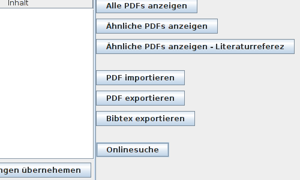

Für den Fall das die interne Parser-Funktion nicht ihren Erwartungen entspricht können sie Optional noch für ausgewählte Dokumente die Online-Suchfunktion nutzen. Hierbei wählen sie Dokument aus und klicken auf die Schaltfläche Onlinesuche.

[zurück]